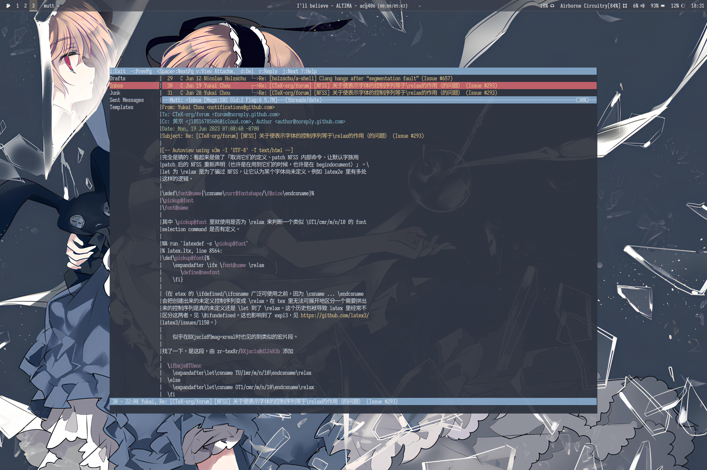
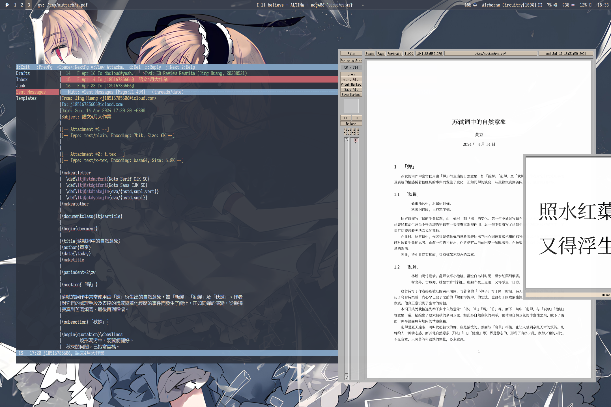

2024年，用Mutt来处理邮件
Table of Contents
“All mail clients suck. This one just sucks less.” — Michael Elkins, circa 1995
1. 写在前面
处理邮件，我之前一直用的是ThunderBird，所谓「Mozilla's solution to mail client」。它的界面很好看，然而真的很重，而且当发送的邮件中有尺寸较大的附件时的体验一直很差，会一直卡着。 直到三天前，我用它接收一个使用邮件传送的9MiB的附件时，它的进度蓝条卡了半个小时还没将页面加载出来，同时还把切换其他信息的动作卡住了。 这时我才真正意识到了什么叫「All mail clients suck」，并打算换一个；试了试号称「sucks less」的Mutt，感觉情况的确比之前有较大改善。

Figure 1: 界面
2. 安装
Gentoo用户需要启用这些USE旗标：
+ + hcache : Enable header cache, one database backend needs to be enabled + + lmdb : Enable dev-db/lmdb database backend for header caching + + slang : Add support for the slang text display library (it's like ncurses, but different) + + smtp : Enable support for direct SMTP delivery + + imap : Add support for IMAP (Internet Mail Application Protocol) + + ssl : Add support for SSL/TLS connections (Secure Socket Layer / Transport Layer Security)
其中，lmdb和hcache是头字段缓存，可选。smtp和imap是其支持的两种协议，你需要查阅文档看一下你的邮件服务供应商支持什么协议；ssl同理。至于slang是一个TUI框架，我只是想试试，你可以保持默认。
3. 配置
3.1. 接收邮件
因为我使用iCloud邮箱，故使用的是imap协议。于~/.config/mutt/muttrc下创建配置文件，并添加如下：
unset imap_passive set mail_check = 60 set imap_keepalive = 300
上面控制其行为准则。
set realname = "{NAME}" set imap_user = "{USER}" set imap_pass = "{PASSWD}" set from = "{EADDR}" set folder = "imaps://{USER}@imap.mail.me.com:{PORT}/" set spoolfile = "+Inbox" set postponed = "+Drafts"
需根据你的邮箱服务供应商而定。比如iCloud，你需要生成一个app-specific的密码。
3.2. 发送邮件
一般使用smtp协议。如下：
set smtp_url = "smtp://{USER}@smtp.mail.me.com:{PORT}/" set smtp_pass = $imap_pass set ssl_force_tls = yes set record = "+Sent Messages"
3.3. MIME
邮件里经常会夹带各种奇奇怪怪的附件，而对这些附件的处理正是Mutt做的不错而ThunderBird略有不足之处。
3.3.1. HTML邮件
这是最特殊的一个，所以单独出来说。由于Mutt最多就是个TUI界面，不要指望它的HTML邮件预览能力跟ThunderBird对齐；话虽如此，它的支持还是不错的。
它自己只负责接受邮件，而将HTML渲染则是外部程序的事情。它可以使用一切程序，但常见的有lynx和w3m。这里使用w3m，因为它在我的系统上已经被安装了。
set mailcap_path = "~/.config/mutt/mailcap" auto_view text/html
随后我们创建负责MIME的配置文件，路径与上面mailcap_path指定的一致，添加：
text/html; w3m -I %{charset} -T text/html; copiousoutput;
3.3.2. 其他格式
依照HTML预览，不难理解Mutt处理MIME的原理。不同之处在于其他格式可能无法在TUI界面中预览。比如图像，也许用Uberzug++是可行的，但更好的方法还是用正经的图像预览工具去查看他们。
这就带来了一个问题，Mutt默认的预览附件的行为是阻塞的，就跟你在vim里执行不带&的壳命令一样；而如果你使用&，由于Mutt会在退出后删除临时存储的附件，导致无法预览。
明白问题后就不难解决。我们只需要将这个要预览的文件复制以下即可。创建如下脚本：
#!/bin/sh t=/tmp/muttach mkdir -p $t f=`basename $2` n=$t/$f cp $2 $n $1 $n &>/dev/null &
将它放入$PATH后，即可在mailcap中如此使用：
application/pdf; muttach gv %s; image/*; muttach imv %s; audio/*; muttach mpv %s; video/*; muttach mpv %s;

Figure 2: 预览PDF
3.4. 优化
默认的Headers很多，大概率我们不需要看到那些，于是我们：
ignore * unignore From To Cc Bcc Date Subject X-face unhdr_order * hdr_order From: To: Cc: Bcc: Date: Subject: X-Face:
为了加快响应速度，我们缓存：
set header_cache = "/var/tmp/mutt" set message_cachedir = "/var/tmp/mutt"
我们启用侧边栏：
set sidebar_visible = yes set sidebar_sort_method = alpha bind index,pager <Esc>k sidebar-prev bind index,pager <Esc>j sidebar-next bind index,pager <Esc>o sidebar-open bind index,pager <Esc>u sidebar-page-up bind index,pager <Esc>d sidebar-page-down
为了让侧边栏有内容，我们偷懒：
set imap_check_subscribed
更方便地查看：
set pager_index_lines = 4
更不错的状态：
set pager_format = " %C - %[%H:%M] %.20v, %s%* %?H? [%H] ?"
以及颜色（色彩高亮），各位可以参考这个。
4. 最后
颅内高潮：
my_hdr X-Face: *[>eDAPM?U?Cx\$/6HNmXzNCNhzKU\#:oG\#(lw!uh\$7nMD%\${/<.wk(r!3C(xNhV.EN!+uOUMq7]/H?Lk98rZl\":690@*gjH@zEz{R\$IuVJlhnlc.0?*BJhGy5N]Fv9D)vv-~-6yg,\\\$lYpE.qk=1FR!K1!3+Ec]L\`~eC,m6bFeXJb-=\$fWylGg3+ALBb\'jhg1z8j7G?dT]@LIt,~LzO,v\"nNOW3a%Y\\5F|id}n*k>2:d>bhAvcA)QM%?\\Xe1A\'>jp9FV*k*@Q(?NhDVT\`32j-YGEe?d\\Y+A@w/\$,EGL^!,w5Dr\$x|ncyr}|Tt^+D.@?uAaHk8T~HZl8U0q
警告：请不要用我的，谢谢。